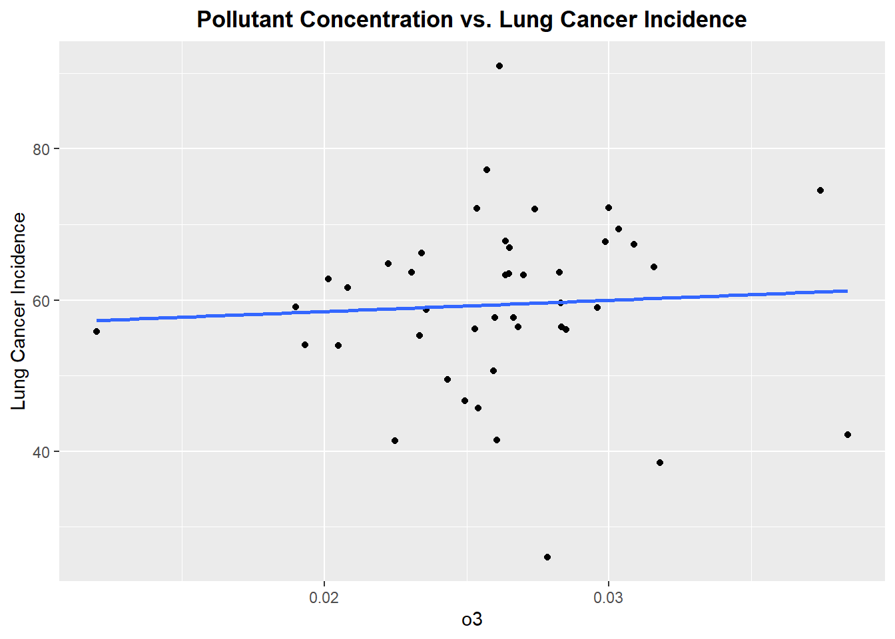
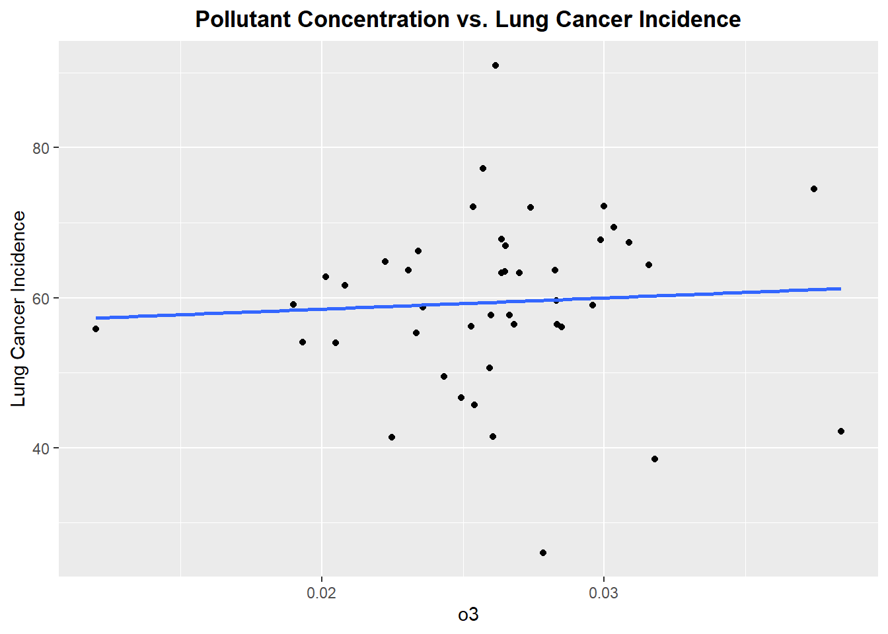
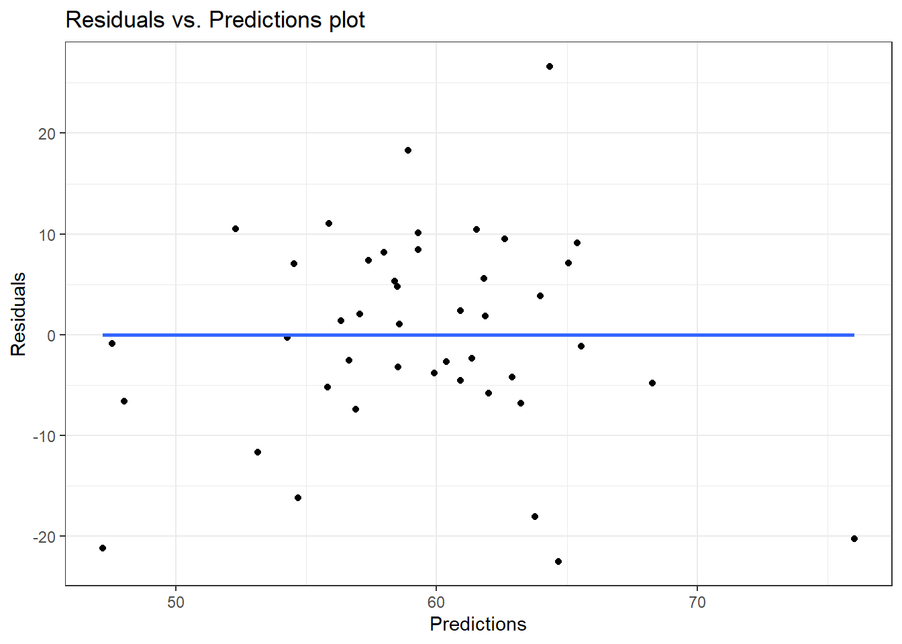
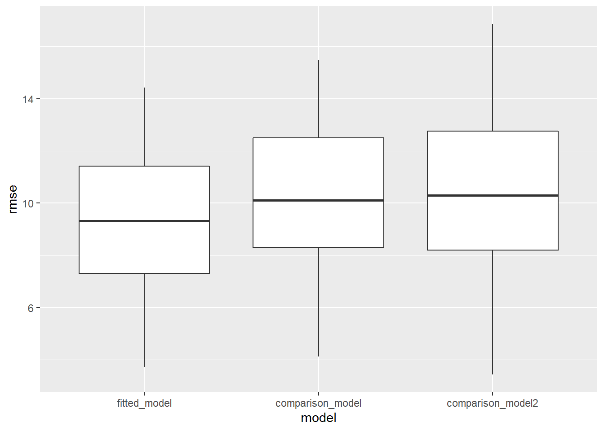

Model Building for Lung Cancer
To continue our analysis we will build a linear model that assesses the relationship between pollutant concentration and incidence of lung cancer. We will merge the data set with incidence rate by state with the pollution data set that has been aggregated by state over the 17 year period. In essence we would like to answer whether states that had higher mean pollutant concentrations over this 15 year period were significantly associated with higher lung cancer incidence. Thus, from building the model we can assess whether concentrations of the various pollutants are significantly associated with increased incidence rates of lung cancer. We will evaluate the predictive accuracy of the model, and cross validate the fitted model to other potential models.
Importing and Merging Pollution Dataset with Lung Cancer Incidence Dataset
inc_state =
read_excel("data/IncRate.xlsx", sheet = "State",
skip = 6) %>%
janitor::clean_names() %>%
separate(
col = breast_both_sexes_combined,
into = c("breast_total", "female_breast_only"),
sep = "-"
) %>%
mutate(
breast_male = if_else(breast_male == "n/a", "0", breast_male),
cervix_male = if_else(cervix_male == "n/a", "0", cervix_male),
colon_excluding_rectum_both_sexes_combined = if_else(colon_excluding_rectum_both_sexes_combined == "n/a", "0", colon_excluding_rectum_both_sexes_combined),
colon_excluding_rectum_female = if_else(colon_excluding_rectum_female == "n/a", "0", colon_excluding_rectum_female),
colon_excluding_rectum_male = if_else(colon_excluding_rectum_male == "n/a", "0", colon_excluding_rectum_male),
) %>%
filter(state != "Puerto Rico") %>%
select(-c("female_breast_only", starts_with("colon"), starts_with("rectum")))pollution_incidence = read_csv("data/uspollution_us_2000_2016.csv") %>%
janitor::clean_names() %>%
select(state, date_local, no2_mean, o3_mean,
so2_mean, co_mean) %>%
separate(date_local, into = c("year", "month", "day"), sep = "\\-") %>%
select(-c("month", "day")) %>%
group_by(year, state) %>%
summarize(across(everything(), mean)) %>%
mutate_if(is.numeric, ~round(., 3)) %>%
filter(state != "Country Of Mexico") %>%
ungroup() %>%
select(state:co_mean) %>%
group_by(state) %>%
summarize(
no2 = mean(no2_mean),
o3 = mean(o3_mean),
so2 = mean(so2_mean),
co = mean(co_mean)
) %>%
merge(inc_state, by = "state") %>%
filter(
state != "Nevada"
) %>%
mutate(
lung_and_bronchus_both_sexes_combined = as.numeric(lung_and_bronchus_both_sexes_combined),
lung_and_bronchus_female = as.numeric(lung_and_bronchus_female),
lung_and_bronchus_male = as.numeric(lung_and_bronchus_male)
)
pollution_incidence %>%
select(state,"lung/bronchus combined" = lung_and_bronchus_both_sexes_combined,
"lung/bronchus male" = lung_and_bronchus_male,
"lung/bronchus female" = lung_and_bronchus_female,
no2,co,so2,o3) %>%
knitr::kable(digits = 3)| state | lung/bronchus combined | lung/bronchus male | lung/bronchus female | no2 | co | so2 | o3 |
|---|---|---|---|---|---|---|---|
| Alabama | 64.8 | 84.1 | 50.0 | 10.020 | 0.212 | 0.945 | 0.022 |
| Alaska | 55.8 | 64.8 | 47.6 | 11.388 | 0.430 | 6.056 | 0.012 |
| Arizona | 46.7 | 51.2 | 43.0 | 19.032 | 0.493 | 1.313 | 0.025 |
| Arkansas | 77.2 | 95.8 | 62.7 | 9.540 | 0.418 | 1.483 | 0.026 |
| California | 41.5 | 46.4 | 37.8 | 13.328 | 0.441 | 1.112 | 0.026 |
| Colorado | 41.4 | 44.1 | 39.6 | 19.886 | 0.467 | 1.627 | 0.022 |
| Connecticut | 59.6 | 65.0 | 55.8 | 9.971 | 0.279 | 1.159 | 0.028 |
| Delaware | 66.9 | 75.3 | 60.8 | 11.643 | 0.265 | 0.969 | 0.026 |
| Florida | 57.7 | 66.5 | 50.5 | 7.454 | 0.450 | 0.479 | 0.027 |
| Georgia | 62.8 | 79.0 | 50.6 | 11.849 | 0.329 | 0.530 | 0.020 |
| Hawaii | 45.7 | 57.3 | 36.3 | 3.182 | 0.369 | 1.020 | 0.025 |
| Idaho | 49.5 | 54.3 | 45.7 | 8.553 | 0.198 | 0.420 | 0.024 |
| Illinois | 63.7 | 73.8 | 56.3 | 15.460 | 0.403 | 2.753 | 0.023 |
| Indiana | 72.2 | 86.4 | 61.4 | 12.393 | 0.382 | 3.289 | 0.030 |
| Iowa | 63.3 | 74.7 | 54.5 | 7.060 | 0.223 | 0.408 | 0.027 |
| Kansas | 56.2 | 64.9 | 49.7 | 11.564 | 0.393 | 2.578 | 0.025 |
| Kentucky | 91.0 | 109.0 | 77.5 | 11.511 | 0.204 | 2.686 | 0.026 |
| Louisiana | 66.2 | 82.6 | 53.6 | 13.697 | 0.404 | 2.257 | 0.023 |
| Maine | 72.1 | 80.3 | 65.8 | 4.961 | 0.225 | 0.882 | 0.025 |
| Maryland | 56.4 | 62.9 | 51.7 | 10.717 | 0.309 | 1.942 | 0.027 |
| Massachusetts | 61.6 | 65.5 | 59.2 | 18.458 | 0.312 | 2.470 | 0.021 |
| Michigan | 63.3 | 71.8 | 56.9 | 16.505 | 0.333 | 3.314 | 0.026 |
| Minnesota | 56.1 | 61.5 | 52.2 | 6.702 | 0.225 | 0.601 | 0.028 |
| Missouri | 72.0 | 83.6 | 63.2 | 14.005 | 0.423 | 3.031 | 0.027 |
| New Hampshire | 63.7 | 67.2 | 61.8 | 7.366 | 0.337 | 1.409 | 0.028 |
| New Jersey | 55.3 | 60.8 | 51.7 | 18.907 | 0.414 | 3.576 | 0.023 |
| New Mexico | 38.5 | 43.9 | 34.3 | 12.343 | 0.211 | 0.613 | 0.032 |
| New York | 58.7 | 66.2 | 53.4 | 18.750 | 0.357 | 4.382 | 0.024 |
| North Carolina | 67.7 | 82.8 | 56.4 | 10.857 | 0.378 | 1.669 | 0.030 |
| North Dakota | 57.7 | 65.4 | 52.3 | 4.773 | 0.169 | 0.221 | 0.026 |
| Ohio | 67.8 | 80.0 | 58.7 | 10.629 | 0.283 | 2.551 | 0.026 |
| Oklahoma | 67.4 | 80.5 | 57.1 | 6.835 | 0.139 | 0.814 | 0.031 |
| Oregon | 54.1 | 58.7 | 50.6 | 9.718 | 0.306 | 0.982 | 0.019 |
| Pennsylvania | 63.5 | 73.4 | 56.4 | 11.809 | 0.231 | 3.658 | 0.026 |
| Rhode Island | 69.4 | 75.4 | 65.6 | 6.986 | 0.222 | 0.470 | 0.030 |
| South Carolina | 64.4 | 80.1 | 52.3 | 2.909 | 0.139 | 0.721 | 0.032 |
| South Dakota | 59.0 | 66.7 | 54.1 | 5.253 | 0.186 | 0.482 | 0.030 |
| Tennessee | 74.5 | 91.6 | 61.4 | 1.800 | 0.414 | 0.815 | 0.037 |
| Texas | 50.6 | 61.3 | 42.2 | 12.242 | 0.270 | 1.117 | 0.026 |
| Utah | 26.0 | 30.2 | 22.5 | 17.066 | 0.376 | 0.475 | 0.028 |
| Virginia | 56.4 | 65.9 | 49.2 | 9.888 | 0.331 | 2.262 | 0.028 |
| Washington | 54.0 | 58.8 | 50.3 | 11.220 | 0.216 | 0.590 | 0.020 |
| Wisconsin | 59.1 | 66.6 | 53.5 | 16.009 | 0.334 | 2.560 | 0.019 |
| Wyoming | 42.2 | 45.2 | 40.0 | 3.209 | 0.098 | 0.331 | 0.038 |
Plotting each Pollutant concentration vs. Lung Cancer Incidence
Let’s begin by exploring each pollutant to see if there exists linear relationship between the pollutant concentration and incidence of lung cancer
continuous_variables =
pollution_incidence %>%
select(where(is.numeric)) %>%
select(-lung_and_bronchus_both_sexes_combined,-lung_and_bronchus_female, -lung_and_bronchus_male) %>%
colnames() %>%
as.vector()Creating a for loop to create scatter plots that evaluate each pollutant concentration vs lung cancer incidence
continuous_variables =
continuous_variables %>%
as.list()
for (i in continuous_variables) {
plot =
ggplot(pollution_incidence, aes_string(i, "lung_and_bronchus_both_sexes_combined")) +
geom_point() +
geom_smooth(method = lm, se = FALSE) +
labs(title = "Pollutant Concentration vs. Lung Cancer Incidence", y = "Lung Cancer Incidence") +
theme(plot.title = element_text(hjust = 0.5, face = "bold"))
print(plot)
} 


Well, this is not the best start. From reviewing the scatter plots, none of the pollutants show a particularly strong linear relationship with incidence of lung cancer. Each plot has a linear model fitted, but as we can see none of the linear associations are strong, however we will proceed forward with a model that includes all the pollutants.The lack of strong linear association will be noted in the final discussion of the prediction accuracy of the fitted model.
fitted_model = lm(lung_and_bronchus_both_sexes_combined ~ no2 + o3 + so2 + co,
data = pollution_incidence)fitted_model %>%
broom::tidy() %>%
select(term, estimate,p.value) %>%
knitr::kable(digits = 3)| term | estimate | p.value |
|---|---|---|
| (Intercept) | 62.537 | 0.000 |
| no2 | -1.034 | 0.034 |
| o3 | 126.200 | 0.768 |
| so2 | 4.561 | 0.006 |
| co | -9.008 | 0.651 |
fitted_model %>%
broom::glance() %>%
knitr::kable(digits = 3)| r.squared | adj.r.squared | sigma | statistic | p.value | df | logLik | AIC | BIC | deviance | df.residual | nobs |
|---|---|---|---|---|---|---|---|---|---|---|---|
| 0.221 | 0.141 | 10.705 | 2.766 | 0.041 | 4 | -164.092 | 340.185 | 350.89 | 4469.614 | 39 | 44 |
From looking at the table of values for the fitted model, we see that beta coefficients for so2 and o3 indicate a positive relationship with lung cancer incidence, whereas the beta coefficients for no2 and co indicate a negative relationship with lung cancer incidence. But more importantly, the only significant beta coefficients are for no2 and so2 using the threshold of alpha-level = 0.05. If look further at the analysis for the model, we see the R^2 value is quite low, This indicates the linear model does not not explain variation in lung cancer incidence well, thus prediction accuracy of the model is low. However, given the p-value for the overall model(p-value=0.041) is significant. Thus we will proceed to look at the residual plot for the fitted model.
pollution_incidence %>%
add_residuals(fitted_model) %>%
add_predictions(fitted_model) %>%
ggplot(aes(x = pred, y = resid)) +
geom_point() +
geom_smooth(method = "lm", se = FALSE) +
labs(
title = "Residuals vs. Predictions plot",
x = "Predictions",
y = "Residuals"
) +
scale_color_viridis(discrete = TRUE) +
theme_bw()
The plot indicates a random scatter of residuals. Therefore, the assumption of homoscedasticity is not violated.
Cross Validation
We will cross validate the fitted model to models that are a combination of the different predictors. O3 and so2 were grouped together because of the scatter plots before that indicate slight positive relationships. Similarly no2 and co were grouped together because of the scatter plots that indicated slightly negative relationships.
comparison_model = lm(lung_and_bronchus_both_sexes_combined ~ o3 + so2, data = pollution_incidence)
comparison_model2 = lm(lung_and_bronchus_both_sexes_combined ~ no2 + co, data = pollution_incidence)cv_df = crossv_mc(pollution_incidence,100)
cv_df =
cv_df %>%
mutate(
train = map(train,as_tibble),
test = map(test,as_tibble)
)cv_df =
cv_df %>%
mutate(
fitted_model = map(train, ~lm(lung_and_bronchus_both_sexes_combined ~ no2 + o3 + so2 + co,
data = pollution_incidence)),
comparison_model = map(train, ~lm(lung_and_bronchus_both_sexes_combined ~ o3 + so2,
data = pollution_incidence)),
comparison_model2 = map(train, ~lm(lung_and_bronchus_both_sexes_combined ~ no2 + co,
data = pollution_incidence))) %>%
mutate(
rmse_fitted_model = map2_dbl(fitted_model, test,~rmse(model=.x, data=.y)),
rmse_comparison_model = map2_dbl(comparison_model, test, ~rmse(model=.x, data=.y)),
rmse_comparison_model2 = map2_dbl(comparison_model2, test, ~rmse(model=.x, data=.y))
)
cv_df %>%
select(starts_with("rmse")) %>%
pivot_longer(
everything(),
names_to = "model",
values_to = "rmse",
names_prefix = "rmse_") %>%
mutate(model = fct_inorder(model)) %>%
ggplot(aes(x = model, y = rmse)) + geom_boxplot()
From the boxplot, we see that the fitted model has a lower RMSE compared to the comparison models. Despite the fitted model being better,the mean RMSE value is approximately equal to 10, which is not good. Thus the overall predictive accuracy of the fitted model is quite low. We will now evaluate whether stratifying lung cancer incidence by gender affects the predictive accuracy of the model.
Lung Cancer Incidence Models Stratified by Gender
Female Model
female_model = lm(lung_and_bronchus_female ~ no2 + o3 + so2 + co, data = pollution_incidence)female_model %>%
broom::tidy() %>%
knitr::kable(digits = 3)| term | estimate | std.error | statistic | p.value |
|---|---|---|---|---|
| (Intercept) | 54.464 | 12.441 | 4.378 | 0.000 |
| no2 | -0.640 | 0.402 | -1.594 | 0.119 |
| o3 | 133.212 | 362.366 | 0.368 | 0.715 |
| so2 | 3.745 | 1.341 | 2.794 | 0.008 |
| co | -15.525 | 16.843 | -0.922 | 0.362 |
female_model %>%
broom::glance() %>%
knitr::kable(digits = 3)| r.squared | adj.r.squared | sigma | statistic | p.value | df | logLik | AIC | BIC | deviance | df.residual | nobs |
|---|---|---|---|---|---|---|---|---|---|---|---|
| 0.195 | 0.112 | 9.129 | 2.357 | 0.07 | 4 | -157.085 | 326.169 | 336.874 | 3250.356 | 39 | 44 |
Male Model
male_model = lm(lung_and_bronchus_male ~ no2 + o3 + so2 + co, data = pollution_incidence) male_model %>%
broom::tidy() %>%
knitr::kable(digits = 3)| term | estimate | std.error | statistic | p.value |
|---|---|---|---|---|
| (Intercept) | 72.236 | 19.060 | 3.790 | 0.001 |
| no2 | -1.496 | 0.615 | -2.430 | 0.020 |
| o3 | 156.136 | 555.152 | 0.281 | 0.780 |
| so2 | 5.611 | 2.054 | 2.732 | 0.009 |
| co | -2.349 | 25.804 | -0.091 | 0.928 |
male_model %>%
broom::glance() %>%
knitr::kable(digits = 3)| r.squared | adj.r.squared | sigma | statistic | p.value | df | logLik | AIC | BIC | deviance | df.residual | nobs |
|---|---|---|---|---|---|---|---|---|---|---|---|
| 0.218 | 0.138 | 13.986 | 2.72 | 0.043 | 4 | -175.854 | 363.709 | 374.414 | 7628.856 | 39 | 44 |
From looking at the beta coefficients and model analyses for both models, predictive accuracy did not improve.